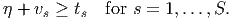
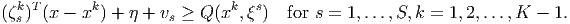
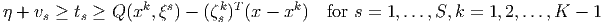
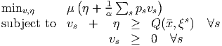
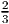

Prove that ρ(x) is a convex function of x.
Solution:
Let x(1) and x(2) be feasible first stage decisions. Since the problem has complete recourse, there are optimal second stage solutions (ys(i).η(i),v s(i)) ∀s for the first stage decisions x(i), i = 1, 2. Let λ ∈ [0, 1] and define = λx(1) + (1 - λ)x(2). Define s = λys(1) + (1 - λ)ys(2) ∀s, = λη(1) + (1 - λ)η(2), and s = λvs(1) + (1 - λ)v s(2) ∀s. Then (s,, s) ∀s is a feasible second stage decision for the first stage decision . Thus,
so ρ(x) is convex.
|
| (1) |
Here, we’ve weighted the CVaR by μ to trade it off with the expected return. We saw the L-shaped method for solving stochastic programming problems in class. At iteration K, a disaggregated Master Problem for problem (1) has the form
 | (2) |
where Q(xk,ξs) is the optimal value of the second stage problem with first stage decision xk and scenario ξs, and the subgradient vector ζ sk has the form
- Exploit the relationships between η + vs, Q(x,ξs), and t s to derive an equivalent formulation with fewer constraints. (Hint: formulation (2) has 2S(K - 1) subgradient inequalities. Can you construct an equivalent formulation with approximately SK constraints to represent the subgradient information?)
- Assume (,,,) is optimal in (2). How would you find upper and lower bounds on the optimal value of (1)?
Solution:
- For any feasible choice of x and η in (2), the best choice for ts and vs for each s
is:

Hence, we can use the constraint
 (3) These S constraints can replace the constraints
 It is clear from the construction that any optimal solution to (2) must satisfy (3).
Conversely, given x and t, if η and v satisfy (3) then
 so the solution is feasible in (2).
- Problem (2) is a relaxation of (1), so the optimal value of (2) gives a lower bound on the
optimal value of (1).
To find an upper bound, we need to find a feasible solution to (1). We take x = and then we choose η and v to solve the linear program
 This is feasible in (1).
Note that the LP can be solved very easily. For example, we can set up the dual problem and exploit complementary slackness, and all that is required is to order the values of Q(,ξs).
- Solve the formulation (1) using a direct formulation using ampl, with α = μ = 0.1. Hand
in the optimal value and the optimal first stage decisions. A model file and a data file
with the data specific to the CVaR formulation are available:
- model file: http://www.rpi.edu/~mitchj/matp6640/hw5html/cap_expCVaR.mod
- data file: http://www.rpi.edu/~mitchj/matp6640/hw5html/cap_expCVaR.dat
You will need to load in both data files.
- Solve the formulation (1) using the L-shaped formulation you derived in
Question 2(b). Hand in the optimal value and the optimal first stage decisions.
Also hand in something to convince me you did solve the problem using an
L-shaped method! For example, highlight the changes you made to the model
and run files, and show some of the output reflecting the progress of the
algorithm.
Model and run files for minimizing the expectation using ampl are available:
- run file: http://www.rpi.edu/~mitchj/matp6640/hw5html/cap_expLshaped.run
- model file: http://www.rpi.edu/~mitchj/matp6640/hw5html/cap_expLshaped.mod
You will need to modify these files to handle the formulation in Question 2
Solutions:
The same problem is solved in both parts, so they give the same solution with value 156 with xrt = 2, xru = xrv = 12, xtu = xtv = 0. In the notation of Question 2, the optimal solution has η = 156, with unmet demand in scenarios 2 and 30.
Here is the output for part (a).
Here is the modified model file for part (b).
Here is the modified run file for part (b).
Here is the output for part (b).
Show that x = (3, 1, 2) is on the central path for this problem.
Solution:
The point y = (0, 0), s = (2, 6, 3) is dual feasible, and then xisi = 6 =: μ for i = 1, 2, 3.
(Most of the problems are also available in AMPL format and MATLAB format and uncompressed MPS format at http://clas.ufl.edu/users/hager/coap/format.html with an AMPL model file available both at http://clas.ufl.edu/users/hager/coap/m2a and at http://www.netlib.org/ampl/models/mps.mod
Alternatively, you can run cplex directly, without using ampl, in which case you would read in the MPS file. Useful commands in cplex include read, optimize, and display. You can choose the solver in cplex by issuing the command set lpmethod at the prompt. You can change options in the barrier solver (including the use of crossover) with the command set barrier. You can use these options in ampl with the syntax option cplex_options ’...’;)
Hand in the primal solution for each problem, and discuss whether the three solutions differ for each of the models you chose. If the solutions have too many variables it is fine to select a few variables to display.
Solution:
The problem boeing1 should give three different solutions. For example, you can look at the variable PLAXSEA8 in these solutions.